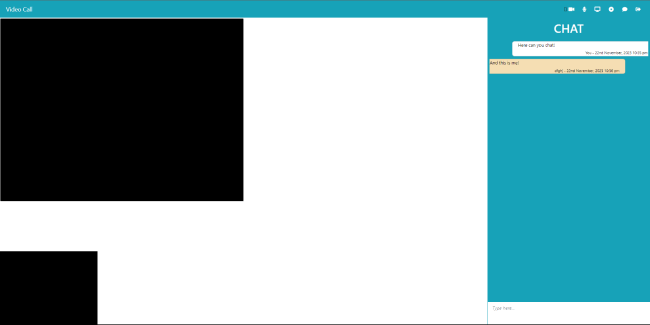
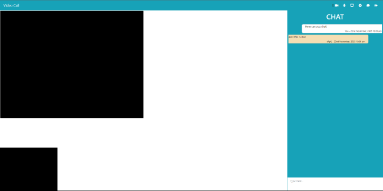

Gebruikt WebRTC api, dit zorgt
voor basis code waarop je de
functionaliteiten op kunt gaan
maken en het zorgt ervoor dat
gebruikers elkaar kunnen vinden
en kunnen connecten met elkaar.
Je kunt bellen met en zonder
video / audio. En je kan real
time chatten.
Hier komt extra uitleg